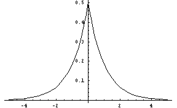
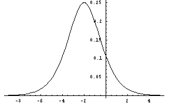
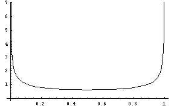
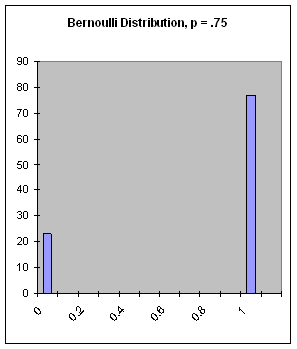
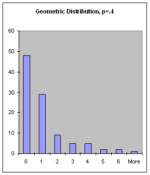

next(pattern, t). For example:
set pitch-source = make-cycle(list(c4, d4, e4, f4)) print next(pitch-source, t)This prints the list
(60 62 64 65), which is one period
of the cycle.
You can also get explicit markers that
delineate periods by calling send(pattern, :next). In this
case, the value returned is either the next item of the pattern, or the
symbol +eop+ if the end of a period has been reached. What
determines a period? This is up to the specific pattern class, so see the
documentation for specifics. You can override the "natural" period
using the keyword for:, e.g.
set pitch-source = make-cycle(list(c4, d4, e4, f4), for: 3) print next(pitch-source, t) print next(pitch-source, t)This prints the lists
(60 62 64) (65 60 62). Notice that
these periods just restructure the stream of items
into groups of 3.
Nested patterns are probably easier to understand by example than by specification. Here is a simple nested pattern of cycles:
set cycle-1 = make-cycle({a b c})
set cycle-2 = make-cycle({x y z})
set cycle-3 = make-cycle(list(cycle-1, cycle-2))
exec dotimes(i, 9, format(t, "~A ", next(cycle-3)))
This will print "A B C X Y Z A B C". Notice that the inner-most
cycles cycle-1 and cycle-2 generate a period of items
before the top-level cycle-3 advances to the next pattern.
Before describing specific pattern classes, there are several optional parameters that apply in the creating of any pattern object. These are:
-
for: - The length of a period. This overrides the default
by providing a numerical length. The value of this optional
parameter may be a pattern that generates a sequence of integers
that determine the length of each successive period. A period
length may not be negative, but it may be zero.
name:- A pattern object may be given a name. This is useful
if the
trace:option is used.
trace:- If non-null, this optional parameter causes information
about the pattern to be printed each time an item is generated
from the pattern.
Pattern Classes
cycle
The cycle-class iterates repeatedly through a list of items.
For example, two periods of make-cycle({a b c}) would be
(A B C) (A B C).
-
make-cycle(items, for: for, name: name, trace: trace)[SAL]
(make-cycle items :for for :name name :trace trace)[LISP] - Make a cycle pattern that iterates over items. The default period length is the length of items. (See above for a description of the optional parameters.) If items is a pattern, a period of the pattern becomes the list from which items are generated. The list is replaced every period of the cycle.
line
The line-class is similar to the cycle class, but when it reaches the
end of the list of items, it simply repeats the last item in the list.
For example, two periods of make-line({a b c}) would be
(A B C) (C C C).
-
make-line(items, for: for, name: name, trace: trace)[SAL]
(make-line items :for for :name name :trace trace)[LISP] - Make a line
pattern that iterates over items. The default period length is the
length of items. As with
make-cycle, items may be a pattern. (See above for a description of the optional parameters.)
random
The random-class generates items at random from a list. The default
selection is uniform random with replacement, but items may be further
specified with a weight, a minimum repetition count, and a maximum
repetition count. Weights give the relative probability of the selection
of the item (with a default weight of one). The minimum count specifies how
many times an item, once selected at random, will be repeated. The maximum
count specifies the maximum number of times an item can be selected in a row.
If an item has been generated n times in succession, and the maximum
is equal to n, then the item is disqualified in the next random selection.
Weights (but not currently minima and maxima) can be patterns. The patterns
(thus the weights) are recomputed every period.
-
make-random(items, for: for, name: name, trace: trace)[SAL]
(make-random items :for for :name name :trace trace)[LISP] - Make a random
pattern that selects from items. Any (or all) element(s) of items
may be lists of the following form:
(value :weight weight :min mincount :max maxcount), where value is the item (or pattern) to be generated, weight is the (optional) relative probability of selecting this item, mincount is the (optional) minimum number of repetitions when this item is selected, and maxcount is the (optional) maximum number of repetitions allowed before selecting some other item. The default period length is the length of items. If items is a pattern, a period from that pattern becomes the list from which random selections are made, and a new list is generated every period.
palindrome
The palindrome-class repeatedly traverses a list forwards and then
backwards. For example, two periods of make-palindrome({a b c})
would be (A B C C B A) (A B C C B A). The elide:
keyword parameter controls whether the first and/or last elements are
repeated:
make-palindrome({a b c}, elide: nil)
;; generates A B C C B A A B C C B A ...
make-palindrome({a b c}, elide: t)
;; generates A B C B A B C B ...
make-palindrome({a b c}, elide: :first)
;; generates A B C C B A B C C B ...
make-palindrome({a b c}, elide: :last)
;; generates A B C B A A B C B A ...
-
make-palindrome(items, elide: elide, for: for, name: name, trace: trace)[SAL]
(make-palindrome items :elide elide :for for :name name :trace trace)[LISP] - Generate items
from list alternating in-order and reverse-order sequencing. The keyword
parameter elide can have the values
:first,:last,t, ornilto control repetition of the first and last elements. The elide parameter can also be a pattern, in which case it is evaluated every period. One period is one complete forward and backward traversal of the list. If items is a pattern, a period from that pattern becomes the list from which random selections are made, and a new list is generated every period.
heap
The heap-class selects items in random order from a list
without replacement, which means that all items are generated once before
any item is repeated. For example, two periods of make-heap({a b c})
might be (C A B) (B A C). Normally, repetitions can occur
even if all list elements are distinct. This happens when the last element
of a period is chosen first in the next period. To avoid repetitions, the
max: keyword argument can be set to 1. The max: keyword only
controls repetitions from the end of one period to the beginning of the next.
If the list contains more than one copy of the same value, it may be repeated
within a period regardless of the value of max:.
-
make-heap(items, for: for, max: max, name: name, trace: trace)[SAL]
(make-heap items :for for :max max :name name :trace trace)[LISP] - Generate items randomly from list without replacement. If max is 1, the first element of a new period will not be the same as the last element of the previous period, avoiding repetition. The default value of max is 2, meaning repetition is allowed. The period length is the length of items. If items is a pattern, a period from that pattern becomes the list from which random selections are made, and a new list is generated every period.
accumulation
The accumulation-class takes a list of values and returns
the first, followed by the first two, followed by the first three,
etc. In other words, for each list item, return all items from the
first through the item. For example, if the list is (A B C), each
generated period is (A A B A B C).
-
make-accumulation(items, name: name, trace: trace)[SAL]
(make-accumulation items :name name :trace trace)[LISP] - For each item, generate items from the first to
the item including the item. The period length is (n^(2) + n) / 2
where n is the length of items. If items is a pattern, a period
from that pattern becomes the list from which items are generated,
and a new list is generated every period. Note that this is similar in
name but different from
make-accumulate.
copier
Thecopier-classmakes copies of periods from a sub-pattern. For example, three periods ofmake-copier(make-cycle({a b c}, for: 1), repeat: 2, merge: t)would be(A A) (B B) (C C). Note that entire periods (not individual items) are repeated, so in this example thefor:keyword was used to force periods to be of length one so that each item is repeated by therepeat:count.
make-copier(sub-pattern, repeat: repeat, merge: merge, for: for, name: name, trace: trace)[SAL]
(make-copier sub-pattern :repeat repeat :merge merge :for for :name name :trace trace)[LISP]- Generate a period
from sub-pattern and repeat it repeat times. If merge is false
(the default), each repetition of a period from sub-pattern results
in a period by default. If merge is true (non-null), then all
repeat repetitions of the period are merged into one result
period by default. If the
for:keyword is used, the same items are generated, but the items are grouped into periods determined by thefor:parameter. If thefor:parameter is a pattern, it is evaluated every result period. The repeat and merge values may be patterns that return a repeat count and a boolean value, respectively. If so, these patterns are evaluated initially and after each repeat copies are made (independent of thefor:keyword parameter, if any). The repeat value returned by a pattern can also be negative. A negative number indicates how many periods of sub-pattern to skip. After skipping these patterns, new repeat and merge values are generated.
accumulate
The accumulate-class forms the sum of numbers returned by another
pattern. For example, each period
of make-accumulate(make-cycle({1 2 -3})) is (1 3 0).
The default output period length is the length of the input period.
-
make-accumulate(sub-pattern, for: for, max: maximum, min: minimum, name: name, trace: trace)[SAL]
(make-accumulate sub-pattern :for for :max maximum :min minimum :name name :trace trace)[LISP] - Keep
a running sum of numbers generated by sub-pattern. The default
period lengths match the period lengths from sub-pattern. If maximum (a pattern or a number) is specified, and the running sum exceeds maximum, the running sum is reset to maximum. If minimum (a pattern or a number) is specified, and the running sum falls below minimum, the running sum is reset to minimum. If minimum is greater than maximum, the running sum will be set to one of the two values. Note that this is similar in name but not in function to
make-accumulation.
sum
The sum-class forms the sum of numbers, one from each of two other
patterns. For example, each period
of make-sum(make-cycle({1 2 3}), make-cycle({4 5 6}))
is (5 7 9).
The default output period length is the length of the input period of the
first argument. Therefore, the first argument must be a pattern, but the
second argument can be a pattern or a number.
-
make-sum(x, y, for: for, name: name, trace: trace)[SAL]
(make-sum x y :for for :name name :trace trace)[LISP] - Form sums of items (which must be numbers) from pattern x and pattern or number y. The default period lengths match the period lengths from x.
product
The product-class forms the product of numbers, one
from each of two other
patterns. For example, each period
of make-product(make-cycle({1 2 3}), make-cycle({4 5 6}))
is (4 10 18).
The default output period length is the length of the input period of the
first argument. Therefore, the first argument must be a pattern, but the
second argument can be a pattern or a number.
-
make-product(x, y, for: for, name: name, trace: trace)[SAL]
(make-product x y :for for :name name :trace trace)[LISP] - Form products of items (which must be numbers) from pattern x and pattern or number y. The default period lengths match the period lengths from x.
eval
The eval-class evaluates an expression to produce each output item.
The default output period length is 1.
-
make-eval(expr, for: for, name: name, trace: trace)[SAL]
(make-eval expr :for for :name name :trace trace)[LISP] - Evaluate expr to generate each item. If expr is a pattern, each item is generated by getting the next item from expr and evaluating it.
length
The length-class generates periods of a specified length from
another pattern. This is similar to using the for: keyword, but
for many patterns, the for: parameter alters the points at which
other patterns are generated. For example, if the palindrome pattern
has an elide: pattern parameter, the value will be computed every
period. If there is also a for: parameter with a value of 2, then
elide: will be recomputed every 2 items. In contrast, if the
palindrome (without a for: parameter) is embedded in a length
pattern with a lenght of 2, then the periods will all be of length 2, but
the items will come from default periods of the palindrome, and therefore
the elide: values will be recomputed at the beginnings of
default palindrome periods.
-
make-length(pattern, length-pattern, name: name, trace: trace)[SAL]
(make-length pattern length-pattern :name name :trace trace)[LISP] - Make a pattern of class
length-classthat regroups items generated by a pattern according to pattern lengths given by length-pattern. Note that length-pattern is not optional: There is no default pattern length and nofor:keyword.
window
The window-class groups items from another pattern by using a sliding
window. If the skip value is 1, each output period is formed
by dropping the first item of the previous perioda and appending the next item
from the pattern. The skip value and the output period length can change
every period. For a simple example, if the period length is 3 and the
skip value is 1, and the input pattern generates the sequence A, B, C, ...,
then the output periods will be (A B C), (B C D), (C D E), (D E F), ....
-
make-window(pattern, length-pattern, skip-pattern, name: name, trace: trace)[SAL]
(make-window pattern length-pattern skip-pattern :name name :trace trace)[LISP] - Make
a pattern of class
window-classthat regroups items generated by a pattern according to pattern lengths given by length-pattern and where the period advances by the number of items given by skip-pattern. Note that length-pattern is not optional: There is no default pattern length and nofor:keyword.
markov
The markov-class generates items from a Markov model. A Markov model
generates a sequence of states according to rules which specify possible
future states
given the most recent states in the past. For example, states might be
pitches, and each pitch might lead to a choice of pitches for the next state.
In the markov-class, states can be either symbols or numbers, but
not arbitrary values or patterns. This makes it easier to specify rules.
However, symbols can be mapped to arbitrary values including pattern
objects, and these become the actual generated items.
By default, all future states are weighted equally, but weights
may be associated with future states. A Markov model must be
initialized with
a sequence of past states using the past: keyword.
The most common form of Markov model is a "first
order Markov model" in which the future item depends only upon one
past item. However, higher order models where the future items depend on
two or more past items are possible. A "zero-order" Markov model, which
depends on no past states, is essentially equivalent to the random pattern.
As an example of a first-order Markov pattern,
two periods of make-markov({{a -> b c} {b -> c} {c -> a}}, past: {a})
might be (C A C) (A B C).
-
make-markov(rules, past: past, produces: produces, for: for, name: name, trace: trace)[SAL]
(make-markov rules past :produces produces :for for :name name :trace trace)[LISP] - Generate a sequence
of items from a Markov process. The rules parameter has the form:
(prev1 prev2 ... prevn -> next1 next2 ... nextn)where prev1 through prevn represent a sequence of most recent (past) states. The symbol*is treated specially: it matches any previous state. If prev1 through prevn (which may be just one state as in the example above) match the previously generated states, this rule applies. Note that every rule must specify the same number of previous states; this number is known as the order of the Markov model. The first rule in rules that applies is used to select the next state. If no rule applies, the next state isNIL(which is a valid state that can be used in rules). Assuming a rule applies, the list of possible next states is specified by next1 through nextn. Notice that these are alternative choices for the next state, not a sequence of future states, and each rule can have any number of choices. Each choice may be the state itself (a symbol or a number), or the choice may be a list consisting of the state and a weight. The weight may be given by a pattern, in which case the next item of the pattern is obtained every time the rule is applied. For example, this rules says that if the previous states were A and B, the next state can be A with a weight of 0.5 or C with an implied weight of 1:(A B -> (A 0.5) C). The default length of the period is the length of rules. The past parameter must be provided. It is a list of states whose length matches the order of the Markov model. The keyword parameter produces may be used to map from state symbols or numbers to other values or patterns. The parameter is a list of alternating symbols and values. For example, to map A to 69 and B to 71, uselist(quote(a), 69, quote(b), 71). You can also map symbols to patterns, for examplelist(quote(a), make-cycle({57 69}), quote(b), make-random({59 71})). The next item of the pattern is is generated each time the Markov model generates the corresponding state. Finally, the produces keyword can beeval:, which means to evaluate the Markov model state. This could be useful if states are Nyquist global variables such asC4, CS4, D4, ]..., which evaluate to numerical values (60, 61, 62, ....
markov-create-rules(sequence, order [, generalize])[SAL]
(markov-create-rules sequence order [generalize])[LISP]- Generate a set of rules suitable for the
make-markovfunction. The sequence is a "typical" sequence of states, and order is the order of the Markov model. It is often the case that a sample sequence will not have a transition from the last state to any other state, so the generated Markov model can reach a "dead end" where no rule applies. This might lead to an infinite stream of NIL's. To avoid this, the optional parameter generalize can be set tot(true), indicating that there should be a fallback rule that matches any previous states and whose future states are weighted according to their frequency in sequence. For example, if sequence contains 5 A's, 5 B's and 10 G's, the default rule will be(* -> (A 5) (B 5) (G 10)). This rule will be appended to the end so it will only apply if no other rule does.
In most of the random number generators described below, there are optional parameters to indicate a maximum and/or minimum value. These can be used to truncate the distribution. For example, if you basically want a Gaussian distribution, but you never want a value greater than 5, you can specify 5 as the maximum value.
The upper and lower bounds are implemented simply by drawing a random number from the full distribution repeatedly until a number falling into the desired range is obtained. Therefore, if you select an acceptable range that is unlikely, it may take Nyquist a long time to find each acceptable random number. The intended use of the upper and lower bounds is to weed out values that are already fairly unlikely.
Figure 7: The Linear Distribution, g = 1.
Figure 8: The Exponential Distribution, delta = 1.
Figure 9: The Gamma Distribution, nu = 4.
Figure 10: The Bilateral Exponential Distribution.
Figure 11: The Cauchy Distribution, tau = 1.
Figure 12: The Hyperbolic Cosine Distribution.
Figure 13: The Logistic Distribution, alpha = 1, beta = 2.
Figure 14: The Arc Sine Distribution.
Figure 15: The Gauss-Laplace (Gaussian) Distribution, xmu = 0, sigma = 1.
Figure 16: The Beta Distribution, alpha = .5, beta = .25.
Figure 17: The Bernoulli Distribution, px1 = .75.
Figure 18: The Binomial Distribution, n = 5, p = .5.
Figure 19: The Geometric Distribution, p = .4.
Figure 20: The Poisson Distribution, delta = 3.
The
The basic idea of
To specify that a parameter is a keyword parameter,
use a keyword symbol (one that ends in a colon) followed
by a default value.
For example, here is a function that
accepts keyword parameters and invokes the
In XLISP, there is additional syntax to specify an alternate symbol
to be used as the keyword and to allow the called function
to determine whether or not a keyword parameter was
supplied, but these features are little-used. See the XLISP
manual for details.
The form of a call to
How many notes will be generated? The keyword
parameter
What is the duration of generated notes? The
keyword
What is the start time of a note? The default start time of the
first note is zero. Given a note, the default start time of the next note is
the start time plus the inter-onset time, which is given by the
When does the score begin and end? The behavior
What function is called to synthesize the note? The
Can I make parameters depend upon the starting time or the duration
of the note? Parameter expressions can use the variable
Can parameters depend on each other? The keyword
How do I debug
How can I save scores generated by
In summary, the following keywords have special interpretations
in
For convenience, a set of functions is offered to access properties
of events (or notes) in scores. Although lisp functions such as
MIDI notes are translated to Xmusic score events as follows:
A simple mechanism called a workspace has been created
to manage scores (and any other Lisp data, for that matter).
A workspace is just a set of lisp global variables. These
variables are stored in the file
In addition, when a workspace is loaded, you can request that
functions be called. For example, the workspace might store
descriptions of a graphical interface. When the workspace is
loaded, a function might run to convert saved data into a
graphical interface. (This is how sliders are saved by the IDE.)
To restore a workspace, use the command
Functions to be called are saved in the list
Random Number Generators
The distributions.lsp library implements random number generators that return random values with various probability distributions. Without this library, you can generate random numbers with uniform distributions. In a uniform distribution, all values are equally likely. To generate a random integer in some range, use random. To generate a real number (FLONUM) in some range, use real-random (or rrandom if the range is 0-1). But there are other interesting distributions. For example, the Gaussian distribution is often used to model
real-world errors and fluctuations where values are clustered around some central value and large deviations are more unlikely than small ones. See Dennis Lorrain, "A Panoply of Stochastic 'Canons'," Computer Music Journal vol. 4, no. 1, 1980, pp. 53-81.
linear-dist(g) [SAL]
(linear-dist g) [LISP]FLONUM value from a linear distribution, where the probability of a value decreases linearly from zero to g which must be greater than zero. (See Figure 7.) The linear distribution is useful for generating for generating time and pitch intervals.

exponential-dist(delta [, high]) [SAL]
(exponential-dist delta [high]) [LISP]FLONUM value from an exponential distribution. The initial downward slope is steeper with larger values of delta, which must be greater than zero. (See Figure 8. The optional high parameter puts an artificial upper bound on the return value.
The exponential distribution generates values greater
than 0, and can be used to generate time intervals. Natural random intervals such as the time intervals between the release of atomic particles or the passing of yellow volkswagons in traffic have exponential distributions. The
exponential distribution is memory-less: knowing that a random number from this distribution is greater than some value (e.g. a note duration is at least 1 second) tells you nothing new about how soon the note will end. This
is a continuous distribution, but geometric-dist (described below) implements the discrete form.

gamma-dist(nu [, high]) [SAL]
(gamma-dist nu [high]) [LISP]FLONUM value from a Gamma distribution. The value is greater than zero, has a mean of nu (a FIXNUM greater than zero), and a mode (peak) of around nu - 1.
The optional high parameter puts an artificial upper bound on the return value.

bilateral-exponential-dist(xmu,
tau [, low, high]) [SAL]
(bilateral-exponential-dist xmu tau [low high]) [LISP]FLONUM value from a bilateral exponential distribution, where xmu is the center of the double exponential and tau controls the spread of the distribution. A larger tau gives a wider distribution (greater variance), and tau must be greater than zero. The low and high parameters give optional artificial bounds on the minimum and maximum output values, respectively.
This distribution is similar to the exponential, except
it is centered at 0 and can output negative values as well. Like
the exponential, it can be used to generate time intervals; however, it might be necessary to add a lower bound so as not to compute a negative time interval.

cauchy-dist(tau [, low, high]) [SAL]
(cauchy-dist tau [low high]) [LISP]FLONUM from the Cauchy distribution, a symetric distribution with a high peak at zero and a width (variance) that increases with parameter tau, which must be greater than zero. The low and high parameters give optional artificial bounds on the minimum and maximum output values, respectively.

hyperbolic-cosine-dist([low, high]) [SAL]
(hyperbolic-cosine-dist [low high)] [LISP]FLONUM value from the hyperbolic cosine distribution, a symetric distribution with its peak at zero. The low and high parameters give optional artificial bounds on the minimum and maximum output values, respectively.

logistic-dist(alpha, beta [, low, high]) [SAL]
(logistic-dist alpha beta [low high]) [LISP]FLONUM value from the logistic distribution, which is symetric about the mean. The alpha parameter primarily affects dispersion (variance), with larger values resulting in values closer to the mean (less variance), and the beta parameter primarily influences the mean. The low and high parameters give optional artificial bounds on the minimum and maximum output values, respectively.

arc-sine-dist() [SAL]
(arc-sine-dist) [LISP]FLONUM value from the arc sine distribution, which outputs values between 0 and 1. It is symetric about the mean of 1/2, but is more likely to generate values closer to 0 and 1.

gaussian-dist(xmu, sigma [, low, high]) [SAL]
(gaussian-dist xmu sigma [low high]) [LISP]FLONUM value from the Gaussian or Gauss-Laplace distribution, a linear function of the normal distribution. It is symetric about the mean of xmu, with a standard deviation of sigma, which must be greater than zero. The low and high parameters give optional artificial bounds on the minimum and maximum output values, respectively.

beta-dist(a, b) [SAL]
(beta-dist a b) [LISP]FLONUM value from the Beta distribution. This distribution outputs values between 0 and 1, with outputs more likely to be close to 0 or 1. The parameter a controls the height (probability) of the right side of the distribution (at 1) and b controls the height of the left side (at 0). The distribution is symetric about 1/2 when a = b.

bernoulli-dist(px1 [, x1, x2]) [SAL]
(bernoulli-dist px1 [x1 x2]) [LISP]

binomial-dist(n, p) [SAL]
(binomial-dist n p) [LISP]FIXNUM value from the binomial distribution, where n is the number of Bernoulli trials run (a FIXNUM) and p is the probability of success in the Bernoulli trial (a FLONUM from 0 to 1). The mean is the product of n and p.

geometric-dist(p) [SAL]
(geometric-dist p) [LISP]FIXNUM value from the geometric distribution, which is defined as the number of failures before a success is achieved in a Bernoulli trial with probability of success p (a FLONUM from 0 to 1).

poisson-dist(delta) [SAL]
(poisson-dist delta) [LISP]FIXNUM value from the Poisson distribution with a mean of delta (a FIXNUM). The Poisson distribution is often used to generate a sequence of time intervals, resulting in random but often pleasing rhythms.

Score Generation and Manipulation
A common application of pattern generators is to specify parameters
for notes. (It should be understood that "notes" in this context
means any Nyquist behavior, whether it represents a conventional note,
an abstract sound object, or even some micro-sound event that is just
a low-level component of a hierarchical sound organization. Similarly,
"score" should be taken to mean a specification for a
sequence of these "notes.")
The score-gen macro (defined by
loading xm.lsp) establishes a convention for representing
scores and for generating them using patterns.
timed-seq macro, described in Section "Combination and Time Structure",
already provides a way to represent a "score" as a list of expressions.
The Xmusic representation goes a bit further by specifying that
all notes are specified by an alternation of keywords and values, where
some keywords have specific meanings and interpretations.
score-gen is you provide a template for notes in
a score as a set of keywords and values. For example,
set pitch-pattern = make-cycle(list(c4, d4, e4, f4))
score-gen(dur: 0.4, name: quote(my-sound),
pitch: next(pitch-pattern), score-len: 9)
generates a score of 9 notes as follows:
((0 0 (SCORE-BEGIN-END 0 3.6))
(0 0.4 (MY-SOUND :PITCH 60))
(0.4 0.4 (MY-SOUND :PITCH 62))
(0.8 0.4 (MY-SOUND :PITCH 64))
(1.2 0.4 (MY-SOUND :PITCH 65))
(1.6 0.4 (MY-SOUND :PITCH 60))
(2 0.4 (MY-SOUND :PITCH 62))
(2.4 0.4 (MY-SOUND :PITCH 64))
(2.8 0.4 (MY-SOUND :PITCH 65))
(3.2 0.4 (MY-SOUND :PITCH 60)))
The use of keywords like :PITCH helps to make scores
readable and easy to process without specific knowledge of
about the functions called in the score. For example, one
could write a transpose operation to transform all the
:pitch parameters in a score without having to know
that pitch is the first parameter of pluck and the
second parameter of piano-note. Keyword parameters are
also used to give flexibility to note specification with
score-gen. Since this approach requires the use of
keywords, the next section
is a brief explanation of how to define functions that use
keyword parameters.
Keyword Parameters
Keyword parameters are parameters whose presence is
indicated by a special symbol, called a keyword, followed
by the actual parameter. Keyword parameters in SAL have
default values that are used if no actual parameter is
provided by the caller of the function. (See Appendix
"XLISP: An Object-oriented Lisp" to learn about keywords in XLISP.)
pluck
function:
define function k-pluck(pitch: 60, dur: 1)
return pluck(pitch, dur)
Now, we can call k-pluck with keyword parameters. The
keywords are simply the formal parameter names with
a prepended colon character (:pitch and :dur
in this example), so a function call would look like:
k-pluck(pitch: c3, dur: 3)
Usually, it is best to give keyword parameters useful
default values. That way, if a parameter such as dur:
is missing, a reasonable default value (1) can be used
automatically.
It is never an error to omit a keyword parameter, but the
called function can check to see if a keyword parameter
was supplied or not.
Because of default values, we can call
k-pluck(pitch: c3) with no duration,
k-pluck(dur: 3) with only a duration,
or even k-pluck() with no parameters.
Using score-gen
The score-gen macro computes a score based on keyword parameters.
Some keywords have a special meaning, while others are not interpreted
but merely placed in the score. The resulting score can be synthesized
using timed-seq (see Section "Combination and Time Structure").
score-gen is simply:
score-gen(k1: e1, k2: e2, ...) [SAL]
(score-gen :k1 e1 :k2 e2 ...) [LISP]score-len: specifies an upper bound on the number
of notes. (Note: in LISP syntax, keywords
are always preceded by colons, so you would write
:score-len instead.) The keyword score-dur: specifies an upper bound
on the starting time of the last note in the score. (To be more
precise, the score-dur: bound is reached when the
default starting time of the next note is greater than or equal
to the score-dur: value. This definition is necessary because
note times are not strictly increasing.) When either bound
is reached, score generation ends. At least one of these two
parameters must be specified or an error is raised. These keyword
parameters are evaluated just once and are not copied into the
parameter lists of generated notes.
dur: defaults to 1 and specifies the nominal duration
in seconds. Since the generated note list is compatible with
timed-seq, the starting time and duration (to be precise, the
stretch factor) are not passed as parameters to the notes. Instead,
they control the Nyquist environment in which the note will be evaluated.
ioi:
parameter. If no ioi: parameter is specified, the inter-onset time
defaults to the duration, given by dur:. In all cases, the default
start time of a note can be overridden by the keyword parameter time:.
SCORE-BEGIN-END
contains the beginning and ending of the
score (these are used for score manipulations, e.g. when scores are merged,
their begin times can be aligned.) When timed-seq is used to
synthesize a score, the SCORE-BEGIN-END marker is
not evaluated. The score-gen macro inserts a "note" of the form
(0 0 (SCORE-BEGIN-END begin-time end-time))
at the time given by the begin: keyword, with begin-time and
end-time determined by the begin: and end:
keyword parameters, respectively. If the begin: keyword is not
provided, the score begins at zero. If the end: keyword
is not provided, the score ends at the default start time
of what would be the next note after the last note in the score
(as described in the previous paragraph). Note: if time: is used to
compute note starting times, and these times are not increasing, it is
strongly advised to use end: to specify an end time for the score,
because the default end time may be anywhere in the middle of the
generated sequence.
name:
parameter names the function. Like other parameters, the value can be any
expression, including something like next(fn-name-pattern),
allowing function names to be recomputed for each note. The default value
is note.
sg:start
to access the start time of the note, sg:ioi to access the
inter-onset time, and sg:dur to access the
duration (stretch factor) of the note. Also, sg:count counts how
many notes have been computed so far, starting at 0. The order of
computation is: sg:start first, then sg:ioi and sg:dur,
so for example, an expression to compute sg:dur can
depend on sg:ioi.
pre:
introduces an expression that is evaluated before each note, and
post: provides an expression to be evaluated after each note.
The pre: expression can assign one or more global variables
which are then used in one or more expressions for parameters.
score-gen expressions? You can set the
trace: parameter to true (t) to enable a print statement
for each generated note.
score-gen that I like? If the
keyword parameter save: is set to a symbol, the global variable
named by the symbol is set to the value of the generated sequence. Of
course, the value returned by score-gen is just an ordinary list that
can be saved like any other value.
score-gen:
begin:, end:, time:, dur:, name:,
ioi:, trace:,
save:, score-len:, score-dur:, pre:, post:.
All other keyword
parameters are expressions that are evaluated once for each note
and become the parameters of the notes.
Score Manipulation
Nyquist encourages the representation of music as
executable programs, or behaviors, and there are various
ways to modify behaviors, including time stretching,
transposition, etc. An alternative to composing executable
programs is to manipulate scores as editable data. Each
approach has its strengths and weaknesses. This section
describes functions intended to manipulate Xmusic scores
as generated by, or at least in the form generated by,
score-gen. Recall that this means scores are lists
of events (e.g. notes), where events are three-element lists of the form
(time duration expression, and where expression
is a standard lisp function call where all parameters are
keyword parameters. In addition, the first "note" may be
the special SCORE-BEGIN-END expression. If this is
missing, the score begins at zero and ends at the end of the
last note.
car, cadr, and caddr can be used, code is more
readable when more mnemonic functions are used to access events.
Functions are provided to shift the starting times of notes,
stretch times and durations, stretch only durations,
add an offset to a keyword parameter, scale a keyword parameter, and
other manipulations. Functions are also provided to extract
ranges of notes, notes that match criteria, and to combine scores.
Most of these functions (listed below in detail)
share a set of keyword parameters that optionally limit the range over which
the transformation operates. The event-time(event) [SAL]
(event-time event) [LISP]
event-set-time(event, time) [SAL]
(event-set-time event time) [LISP]
event-dur(event) [SAL]
(event-dur event) [LISP]
event-set-dur(event, dur) [SAL]
(event-set-dur event dur) [LISP]
event-expression(event) [SAL]
(event-expression event) [LISP]
event-set-expression(event,
dur) [SAL]
(event-set-expression event dur) [LISP]
event-end(event) [SAL]
(event-end event) [LISP]
expr-has-attr(expression, attribute) [SAL]
(expr-has-attr expression attribute) [LISP]
expr-get-attr(expression, attribute [, default]) [SAL]
(expr-get-attr expression attribute [default]) [LISP]nil.
expr-set-attr(expr, attribute, value) [SAL]
(expr-set-attr expr attribute value) [LISP]
event-has-attr(event, attribute) [SAL]
(event-has-attr event attribute) [LISP]
event-get-attr(event, attribute,
[default]) [SAL]
(event-get-attr event attribute [default]) [LISP]nil.
event-set-attr(event, attribute, value) [SAL]
(event-set-attr event attribute value) [LISP]
from-index: and to-index:
parameters specify the index of the first note and the index of the
last note to be changed. If these numbers are negative, they are offsets
from the end of the score, e.g. -1 denotes the last note of the score. The
from-time: and to-time: indicate a range of starting times
of notes that will be affected by the manipulation. Only notes whose time
is greater than or equal to the from-time and strictly less than
the to-time are modified. If both index and time ranges are specified,
only notes that satisfy both constraints are selected. (Note: in
LISP syntax, colons precede the keyword, so use
:from-index, :to-index, :from-time, and :to-time.)
score-sorted(score) [SAL]
(score-sorted score) [LISP]
score-sort(score [, copy-flag]) [SAL]
(score-sort score [copy-flag]) [LISP]
score-shift(score, offset, from-index: i, to-index: j, from-time: x,
to-time: y) [SAL]
(score-shift score offset
:from-index i :to-index j :from-time x
:to-time y) [LISP]
score-stretch(score, factor, dur: dur-flag, time: time-flag, from-index: i,
to-index: j, from-time: x, to-time: y) [SAL]
(score-stretch score factor
:dur dur-flag :time time-flag :from-index i
:to-index j :from-time x :to-time y) [LISP]from-time: and to-time:), time
stretching
takes place over the indicated time interval independent of whether
any notes are present or where they start. In other words, the
"rests" are stretched along with the notes.
The original score is not modified, and a new score is returned.
score-transpose(score,
keyword, amount, from-index: i, to-index: j,
from-time: x, to-time: y) [SAL]
(score-transpose score
keyword amount :from-index i :to-index j
:from-time x :to-time y) [LISP](score-transpose 2 :pitch score). The
original score is not modified, and a new score
is returned.
score-scale(score, keyword, amount, from-index: i, to-index: j, from-time: x,
to-time: y) [SAL]
(score-scale score keyword amount
:from-index i :to-index j :from-time x
:to-time y) [LISP]
score-sustain(score, factor, from-index: i, to-index: j, from-time: x,
to-time: y) [SAL]
(score-sustain score factor
:from-index i :to-index j :from-time x
:to-time y) [LISP]
score-voice(score,
replacement-list, from-index: i, to-index: j,
from-time: x, to-time: y) [SAL]
(score-voice score
replacement-list :from-index i :to-index j
:from-time x :to-time y) [LISP]((old1 new1) (old2 new2) ...), where oldi indicates
a current behavior name and newi is the replacement. If oldi
is *, it matches anything. For example, to
replace my-note-1 by trombone and my-note-2 by
horn, use score-voice(score, {{my-note-1 trombone}
{my-note-2 horn}}). To replace all instruments with
piano, use score-voice(score, {{* piano}}).
The original score is not modified, and a
new score is returned.
score-merge(score1, score2, ...) [SAL]
(score-merge score1 score2 ...) [LISP]
score-append(score1, score2, ...) [SAL]
(score-append score1 score2 ...) [LISP]
score-select(score,
predicate, from-index: i, to-index: j, from-time: x,
to-time: y, reject: flag) [SAL]
(score-select score
predicate :from-index i :to-index j :from-time x
:to-time y :reject flag) [LISP]t,
indicating that all notes in range are to be selected.
The selected notes along with the existing score begin and end markers, are combined to form a new score. Alternatively, if
the reject: parameter is non-null, the notes not selected form
the new score (in other words the selected notes are rejected or removed to
form the new score). The original score is not modified, and a
new score is returned.
score-set-begin(score, time) [SAL]
(score-set-begin score time) [LISP]SCORE-BEGIN-END marker is set to time. The
original score is not modified, and a new score is returned.
score-get-begin(score) [SAL]
(score-get-begin score) [LISP]
score-set-end(score, time) [SAL]
(score-set-end score time) [LISP]SCORE-BEGIN-END marker is set to time. The
original score is not modified, and a new score is returned.
score-get-end(score) [SAL]
(score-get-end score) [LISP]
score-must-have-begin-end(score) [SAL]
(score-must-have-begin-end score) [LISP]SCORE-BEGIN-END expression and return it. If score already has a begin
and end time, just return the score. The orignal score is not modified.
score-filter-length(score,
cutoff) [SAL]
(score-filter-length score cutoff) [LISP]score-select, but the here, events are removed when
their nominal ending time (start time plus duration) exceeds the cutoff,
whereas the to-time: parameter is compared to the note's start time.
The original score is not modified, and a new score is returned.
score-repeat(score, n) [SAL]
(score-repeat score n) [LISP]score-append.
The original score is not modified, and a new score is returned.
score-stretch-to-length(score,
length) [SAL]
(score-stretch-to-length score length) [LISP]
score-filter-overlap(score) [SAL]
(score-filter-overlap score) [LISP]
score-print(score) [SAL]
(score-print score) [LISP]nil.
score-play(score) [SAL]
(score-play score) [LISP]timed-seq to convert the score to a sound, and
play to play the sound.
score-adjacent-events(score,
function,
from-index: i, to-index: j,
from-time: x, to-time: y) [SAL]
(score-adjacent-events score function :from-index i :to-index j :from-time x :to-time y) [LISP](function A B C), where
A, B, and C are consecutive notes in the score. The result
replaces B. If the result is nil, B is deleted, and the
next call will be (function A C D), etc. The first call is
to (function nil A B) and the last is to
(function Y Z nil). If there is just one note in the
score, (function nil A nil) is called. Function calls
are not made if the note is outside of the indicated range.
This function
allows notes and their parameters to be adjusted according to their
immediate context. The original score is not modified,
and a new score is returned.
score-apply(score, function,
from-index: i, to-index: j, from-time: x, to-time: y)
[SAL]
(score-apply score function :from-index i :to-index j :from-time x :to-time y) [LISP](function time dur expression) (in Lisp) or
function(time, dur, expression) (in SAL),
where time, dur,
and expression are the time, duration, and expression of the note.
If a range is indicated, only notes in the range are replaced.
The original score is not modified, and a new score is returned.
score-indexof(score, function,
from-index: i, to-index: j, from-time: x, to-time: y) [SAL]
(score-indexof score function :from-index i :to-index j :from-time x :to-time y) [LISP](function time dur expression) returns true.
score-last-indexof(score,
function, from-index: i, to-index: j, from-time: x,
to-time: y) [SAL]
(score-last-indexof score function
:from-index i :to-index j :from-time x :to-time y) [LISP](function time dur expression) returns true.
score-randomize-start(score, amt, from-index: i, to-index: j, from-time: x,
to-time: y) [SAL]
(score-randomize-start score amt
:from-index i :to-index j :from-time x
:to-time y) [LISP]Xmusic and Standard MIDI Files
Nyquist has a general facility to read and write MIDI files.
You can even translate to and from a text representation, as described
in Chapter "MIDI, Adagio, and Sequences". It is also useful sometimes to read notes
from Standard MIDI Files into Xmusic scores and vice versa. At present,
Xmusic only translates notes, ignoring the various controls, program
changes, pitch bends, and other messages.
where channel, keynum, and velocity come directly
from the MIDI message (channels are numbered starting from zero).
Note also that note-off messages are implied by the stretch factor
dur which is duration in seconds.
(time dur (NOTE :chan channel :pitch keynum :vel velocity)),
score-read-smf(filename) [SAL]
(score-read-smf filename) [LISP]nil
if the file could not be opened. The
start time is zero, and the end time is the maximum end time of all
notes. A very limited interface is offered to extract MIDI program numbers
from the file: The global variable *rslt* is set to a list of MIDI
program numbers for each channel. E.g. if *rslt* is (0 20 77),
then program for channel 0 is 0, for channel 1 is 20, and for channel 2 is 77.
Program changes were not found on other channels. The default program number is
0, so in this example, it is not known whether the program 0 on channel 0
is the result of a real MIDI program change command or just a default value.
If more than one program change exists on a channel, the last program
number is recorded and returned, so this information will only be completely
correct when the MIDI file sends single program change per channel before
any notes are played. This, however, is a fairly common practice. Note that
the list returned as *rslt* can be passed
to score-write-smf, described below.
score-read(filename) [SAL]
(score-read filename) [LISP]nil
if the file could not be opened. See Chapter "MIDI, Adagio, and Sequences" for details on
Adagio, a text-based score language. See score-read-smf for
details on handling program changes.
score-write-smf(score, filename,
[programs as-adagio]) [SAL]
(score-write-smf score filename [programs) as-adagio] [LISP]pitch: attribute, regardless of the
"instrument" (or function name), generates a
MIDI note, using the chan: attribute for the channel (default 0) and
the vel: attribute for velocity (default 100). There is no facility
(in the current implementation) to issue control changes, but to allow
different instruments, MIDI programs may be set in two ways. The simplest is
to associate programs with channels using
the optional programs parameter, which is simply a list of up to 16 MIDI
program numbers. Corresponding program change commands are added to the
beginning of the MIDI file. If programs has less than 16 elements, program
change commands are only sent on the first n channels. The second way to
issue MIDI program changes is to add a program: keyword parameter to
a note in the score. Typically, the note will have a pitch: of
nil so that no actual MIDI note-on message is generated. If program
changes and notes have the same starting times, their relative playback
order is undefined, and the note may be cut off by an immediately
following program change. Therefore, program changes should occur slightly,
e.g. 1 ms, before any notes. Program numbers and channels are numbered
starting at zero, matching the internal MIDI representation. This may be
one less than displayed on MIDI hardware, sequencers, etc. The
as-adagio optional parameter should normally be omitted.
If non-nil, the file is written in Adagio format, but if you
want to do that, call score-write instead.
score-write(score, filename,
[programs]) [SAL]
(score-write score filename [programs] [LISP]Write an Adagioformat file to filename with notes in score. See Chapter "MIDI, Adagio, and Sequences" for details on Adagio, a text-based score language. See score-write-smf for details on MIDI program changes.
Workspaces
When working with scores, you may find it necessary to save
them in files between work sessions. This is not an issue
with functions because they are
normally edited in files and loaded from them. In contrast,
scores are created as Lisp data, and unless you take care to
save them, they will be destroyed when you exit the Nyquist
program.
workspace.lsp.
For simplicity, there is only one workspace, and no backups
or versions are maintained, but the user is free to make
backups and copies of workspace.lsp.
To help remember what each variable is for, you can also
associate and retrieve a text string with each variable.
The following functions manage workspaces.
add-to-workspace(symbol) [SAL]
(add-to-workspace symbol) [LISP]
save-workspace() [SAL]
(save-workspace) [LISP]workspace.lsp (in the current
directory), overwriting the previous file.
describe(symbol [, description])
[SAL]
(describe symbol [description)] [LISP]
add-action-to-workspace(symbol) [SAL]
(add-action-to-workspace symbol) [LISP]load "workspace". This restores
the values of the workspace variables to the values they had when
save-workspace was last called. It also restores the documentation
strings, if set, by describe. If you load two or more
workspace.lsp files, the variables will be merged into a
single workspace. The current set of workspace variables are saved in
the list *workspace*. To clear the workspace, set *workspace*
to nil. This does not delete any variables, but means that
no variables will be saved by save-workspace until variables are
added again.
*workspace-actions*.
to clear the functions, set *workspace-actions* to nil.
Restore functions to the list with add-action-to-workspace.
Utility Functions
This chapter concludes with details of various utility functions for score
manipulation.
patternp(expression) [SAL]
(patternp expression) [LISP]
params-transpose(params, keyword,
amount) [SAL]
(params-transpose params keyword amount) [LISP]
params-scale(params, keyword,
amount) [SAL]
(params-scale params keyword amount) [LISP]params-transpose, only using multiplication. The params
list is a list of
keyword/value pairs, keyword is the parameter keyword,
and amount is the scale factor.
interpolate(x, x1, y1, x2, y2) [SAL]
(interpolate x x1 y1 x2 y2) [LISP]
intersection(a,
b) [SAL]
(intersection a b) [LISP]
union(a, b) [SAL]
(union a b) [LISP]
set-difference(a,
b) [SAL]
(set-difference a b) [LISP]
subsetp(a, b) [SAL]
(subsetp a b) [LISP]
Previous Section | Next Section | Table of Contents | Index | Title Page